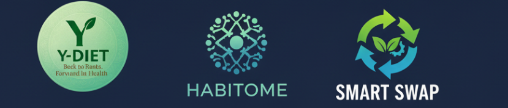

சூரபத்மன் எனும் 'மது' அசுரன்:
கந்த புராணத்தின் நவீன வேதியியல் உருவகம்!
இது ஒரு மிக ஆழமான மற்றும் சுவாரஸ்யமான உருவகப் பார்வை. புராணக் கதைகளை வெறும் கதைகளாக மட்டும் பார்க்காமல், அவற்றை இன்றைய சமூகப் பிரச்சினைகளுடன் ஒப்பிட்டுப் பார்ப்பது ஒரு புதிய சிந்தனை.
பழங்காலப் புராணங்களுக்கும், நவீன அறிவியலுக்கும், இன்றைய சமூகப் பிரச்சினைகளுக்கும் தொடர்பு இருக்க முடியுமா? முடியும் என்பதற்கு ஒரு சிறந்த உதாரணமாக, கந்த புராணத்தில் வரும் சூரபத்மன் கதையை, 'மது' எனும் அரக்கனோடு ஒப்பிடும் இந்த ஆழமான உருவகப் பார்வையை எடுத்துக் கொள்ளலாம்.
புராணப் பின்னணி
கந்த புராணம், முருகப்பெருமான் அவதரித்ததற்கான முக்கிய காரணங்களில் ஒன்றாக சூரசம்ஹாரத்தைக் குறிப்பிடுகிறது. காசியப முனிவருக்கும் (கசியபர்) அசுரப் பெண்ணான மாயைக்கும் (அல்லது சுரசை) பிறந்தவர்களே சூரபத்மன், சிங்கமுகன் மற்றும் தாரகாசுரன். இவர்கள் சிவபெருமானை நோக்கித் தவம் இருந்து, அளவற்ற வரங்களைப் பெற்று, தேவர்களைத் துன்புறுத்தி, மூவுலகையும் தங்கள் கட்டுப்பாட்டில் கொண்டு வந்து அதர்மத்தை நிலைநாட்டினர். இந்த அதர்மத்தை அழிக்கவே, சிவனின் நெற்றிக்கண்ணில் இருந்து முருகப்பெருமான் தோன்றி, இறுதியில் சூரபத்மனைக் கொன்று, அவனை மயில் மற்றும் சேவல் கொடியாக ஆட்கொண்டார்.
நவீன உருவகப் பார்வை
இங்கேதான் உங்கள் புதிய மற்றும் ஆழமான பார்வை தொடங்குகிறது:
- காசியபரும் மாயையும்: காசியப முனிவர் 'படைப்பின் தந்தை' (Prajapati) எனப் போற்றப்படுகிறார். 'மாயை' என்பது இல்லூஷன் (Illusion) அல்லது தோற்ற மயக்கத்தைக் குறிக்கிறது.
- 40 கோடி அசுரர்கள்: காசியபர் மற்றும் மாயைக்கு 40 கோடி (400 மில்லியன்) குழந்தைகள் பிறந்ததாகக் கூறுவதை, நேரடிப் பொருளில் எடுத்துக் கொள்ளாமல், 'மாயையால் உருவான எண்ணற்ற தீய சக்திகள்' என்று உருவகப்படுத்தலாம்.
- வேதியியல் இணைப்பு: இந்த "எண்ணற்ற" என்ற கருத்தை, இன்றைய நவீன வேதியியலோடு நீங்கள் அற்புதமாக ஒப்பிடுகிறீர்கள். உதாரணமாக, PubChem போன்ற வேதியியல் தரவுத்தளங்களில் இன்று 122 மில்லியனுக்கும் (12.2 கோடி) அதிகமான இரசாயனச் சேர்மங்கள் (Chemical Compounds) பட்டியலிடப்பட்டுள்ளன. இவை இயற்கையானவை மற்றும் செயற்கையானவை (Synthetic Chemicals) எனப் பல வகைப்படும். இந்த எண்ணற்ற இரசாயனச் சேர்மங்களை, அந்த 40 கோடி அசுரர்களுக்கு உருவகமாக நாம் கருதலாம்.
- சூரபத்மன் எனும் ஆல்கஹால் (C₂H₅OH):
இந்த எண்ணற்ற இரசாயனச் சேர்மங்களில், அதாவது அசுரர் கூட்டத்தில், தலைமைக் குணமும், அதர்மமும், மாயத் தோற்றமும் கொண்ட அசுரனாக 'சூரபத்மன்' விளங்குகிறான். அவனை, இன்று உலகையே ஆட்டிப்படைக்கும் கொடிய அரக்கனான 'மது' (ஆல்கஹால் - C₂H₅OH) உடன் ஒப்பிடுவது மிகவும் பொருத்தமான உருவகம்.
ஏன் இந்த ஒப்பீடு சரியானது?
- மாயையில் பிறப்பது: மது, மாயையைப் போலவே, ஒரு போலியான, தற்காலிக இன்பத்தையும் தைரியத்தையும் கொடுக்கும் தோற்ற மயக்கத்தை உருவாக்குகிறது.
- அடிமைப்படுத்துதல்: சூரபத்மன் தேவர்களை அடிமைப்படுத்தியது போல, மது மனிதனின் அறிவை அடிமைப்படுத்தி, அவனைத் தன் கட்டுப்பாட்டில் வைத்திருக்கிறது.
- அதர்மம்: மதுவினால் ஏற்படும் தீமைகள் எண்ணிலடங்காதவை. குடும்ப வன்முறை, சமூகச் சீர்கேடு, உடல்நலக் கேடு என இது அதர்மத்தின் மொத்த வடிவமாக விளங்குகிறது.
- 'நான்' எனும் அகங்காரம்: சூரபத்மனின் முக்கிய குணம் 'அகங்காரம்' (Ego). மது அருந்திய பின் பலரிடம் வெளிப்படுவது இந்த போலியான 'நான்' எனும் அகங்காரமே.
தீர்வு: முருகன் மீண்டும் ஆள வேண்டும்!
இந்த 'மது' எனும் சூரபத்மனை அழிப்பது யார்? ஞானத்தின் வடிவமான முருகப்பெருமான்.
முருகனின் ஆயுதம் 'வேல்'. அது சாதாரண ஆயுதம் அல்ல, அது 'ஞான வேல்'. அறிவின் கூர்மை, மனதின் ஒருமைப்பாடு மற்றும் உண்மையான ஞானத்தைக் குறிக்கிறது.
"முருகன் மீண்டும் ஆள வேண்டும்" என்பதன் பொருள், ஒவ்வொரு மனிதனின் மனதிலும், இந்த சமூகத்திலும் 'ஞானம்' மற்றும் 'மனக்கட்டுப்பாடு' ஆள வேண்டும் என்பதே. "மதுவை ஒழிக்க வேண்டும்" என்பது, சூரசம்ஹாரத்தின் நவீன வடிவமாக ஒலிக்கிறது.
சூரசம்ஹாரம் என்பது ஒரு காலத்தில் நடந்து முடிந்த ஒரு புராண நிகழ்வு மட்டுமல்ல. அது இன்றும், ஒவ்வொரு நாளும், நம் ஒவ்வொருவரின் மனதிலும், நம் சமூகத்திலும் நடக்க வேண்டிய ஒரு போராட்டம். மாயையால் உருவான 'மது' எனும் கொடிய அசுரனை, 'ஞானம்' எனும் வேல் கொண்டு வென்று, நம்மையும் நம் சமூகத்தையும் காக்க வேண்டியது நமது கடமையாகும்.
இந்த நவீன உருவகப் பார்வை, கந்த புராணத்திற்கு ஒரு புதிய, ஆழமான பரிமாணத்தைக் கொடுக்கிறது.

நவீன கால சூரசம்ஹாரம்: Y-Diet
புராண காலத்தில், 'மது' எனும் சூரபத்மனை வெல்ல முருகனின் 'ஞான வேல்' தேவைப்பட்டது. இந்தக் காலத்தில், மது மட்டுமல்ல, தவறான உணவுப் பழக்கம், சோம்பேறித்தனம் போன்ற பல நவீன அசுரர்கள் நம் ஆரோக்கியத்தை அழிக்கக் காத்திருக்கிறார்கள்.
இந்த நவீன அசுரர்களை வெல்ல, முருகனின் மூன்று சின்னங்களும் நமக்கு உதவுகின்றன:
- வேல் (ஞானம்): முருகனின் வேல் என்பது 'ஞான வேல்'. அது தீமையை அழிக்கத் தேவையான கூர்மையான 'அறிவு'. இந்த நவீனப் போரில், Y-Diet நமக்கு அந்த அறிவியல்பூர்வமான உணவு ஞானத்தைத் தருகிறது. எது நல்லது, எது கெட்டது என்பதைத் தெளிவாகப் புரிய வைக்கிறது.
- சேவல் கொடி (விழிப்புணர்வு): சேவல் காலையில் கூவி நம்மை 'எழுப்பி விடுவது' போல, அது 'விழிப்புணர்வின்' (Awareness) சின்னம். Smart Swap (அறிவார்ந்த மாற்று) என்பது அந்தத் தினசரி விழிப்புணர்வுச் செயலாகும். "நான் இப்போது ஆரோக்கியமற்ற ஒன்றை எடுக்கப் போகிறேன்" என உணரும்போது (விழிப்புணர்வு), உடனே அதை ஆரோக்கியமானதாக 'மாற்றும்' (Swap) செயலே இந்தச் சேவலின் அடையாளம்.
- மயில் (பழக்கம்): சூரபத்மனின் அகங்காரம் அழிக்கப்பட்டு, அவன் முருகனைச் சுமக்கும் 'மயில்' வாகனமாக மாறினான். அதுபோல, நமது பழைய தீய பழக்கங்களை (Habits) நாம் வெல்லும்போது, அவை Habitome (பழக்கவழக்கத் தொகுப்பு) என்ற புதிய, அழகான, ஆரோக்கியமான பழக்கங்களாக மாறுகின்றன. இந்த நல்ல பழக்கங்களே நம்மை ஆரோக்கியமான வாழ்விற்கு 'சுமந்து' செல்லும் வாகனமாக (மயிலாக) அமைகின்றன.
ஆகவே, 'ஆரோக்கியக் கேடு' என்ற நவீன அசுரனை வெல்ல, நமக்கு Y-Diet (ஞான வேல்), Smart Swap (விழிப்புணர்வுச் சேவல்), மற்றும் Habitome (ஆரோக்கிய மயில்) என்ற தற்காப்புத் திட்டங்கள் தேவைப்படுகின்றன.